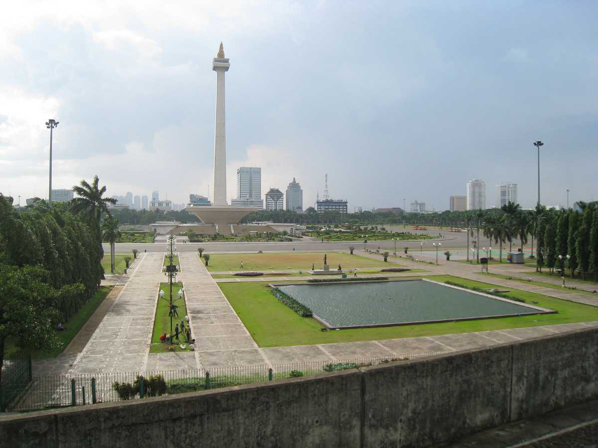
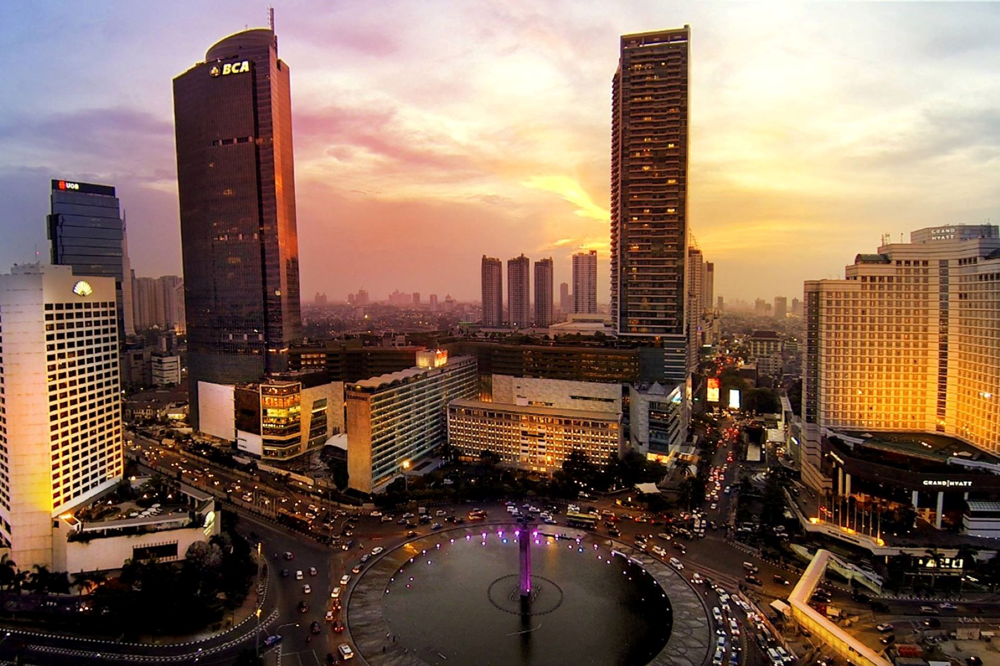

must visit place in
Jakarta
-

Kepulauan Seribu (Thousands Island)
Whether going for underwater expeditions from the different diving spots scattered across the islands or engaging in wildlife photography and bird watching activities, Kepulauan Seribu has plenty of exciting activities in store. The flora and fauna of the Thousand Islands are most fascinating things to observe during your trip.
-

Kota Tua (Old City)
Also known as Old Batavia, this relatively small area, covering 1.3 sq. km, was once the nation's most important administrative and business center. Though not all buildings are well-preserved, it remains a charming tourist attraction today that gives a peek into Jakarta's colonial history and culture. It is also known for its busy night market.
-

Monas (National Monument)
The National Monument of Indonesia is a massive tower located at Merdeka Square's center. It will take you through the evolution of Indonesia's culture since its pre-historic times, with many artifacts from each era. The historic structure also has an observation deck, the National History Museum, and the Hall of Independence.
-

Grand Indonesia Mall
Grand Indonesia Mall is a hub for entertainment, food, recreational and fun activities. It has top-class clothing brands and bookstores, a miniature theme park, and arcade games for children. It also has a dancing fountain show at the fountain atrium at 2:00 PM, 5:00 PM and 8:00 PM every day.